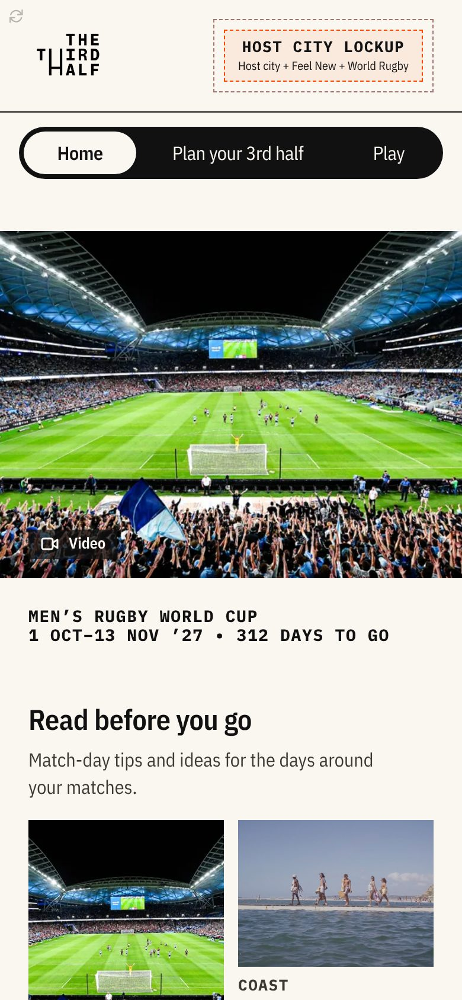
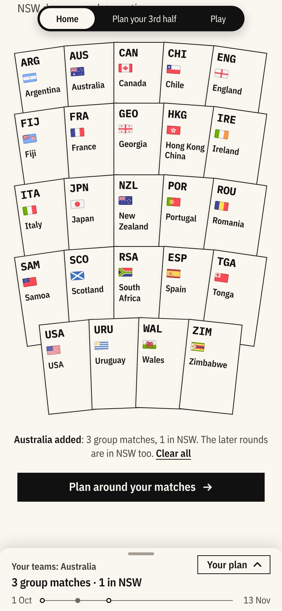
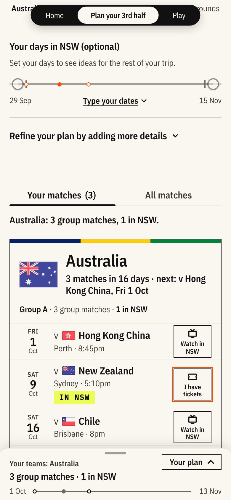
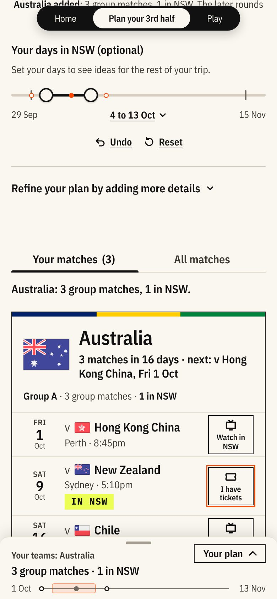
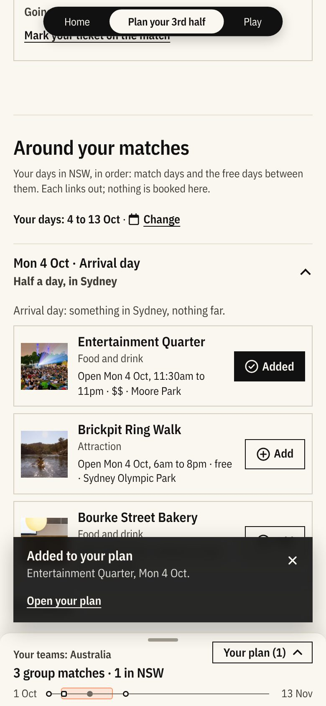
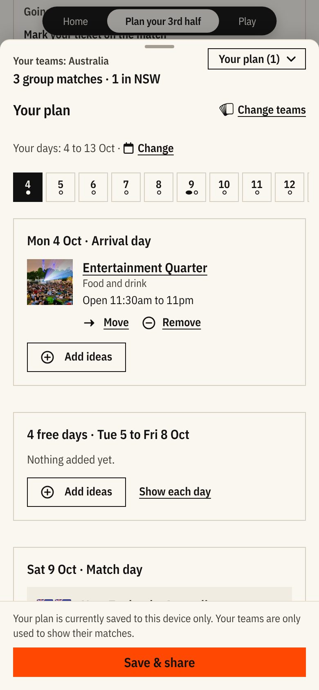

Scroll sideways to follow the flow.

Scrolls to the hand, taps Australia

Taps Plan around your matches
No, not showing
Not reached on this path: Your days shows as soon as a team is picked.
Yes, showing

Drags the slider to 4 to 13 Oct

Scrolls to Around your matches, taps Add

Taps Your plan on the plan bar
